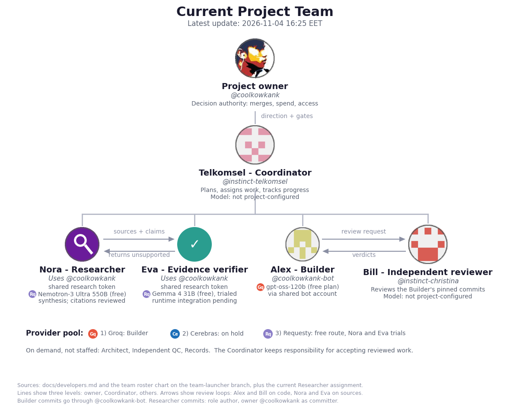

Large icon = accountable owner by role. Provider badges are stylized letter marks. "Not project-configured" means the project does not document a model or provider. A vacant role has no active member. Scroll sideways and down; the page is a view of team.png, updated when the team changes.
